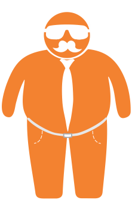
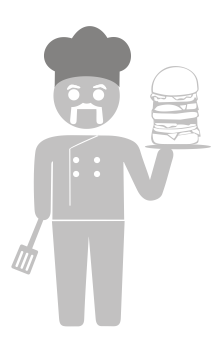
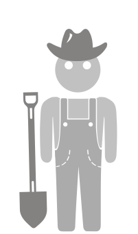
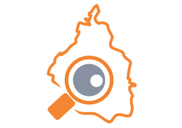
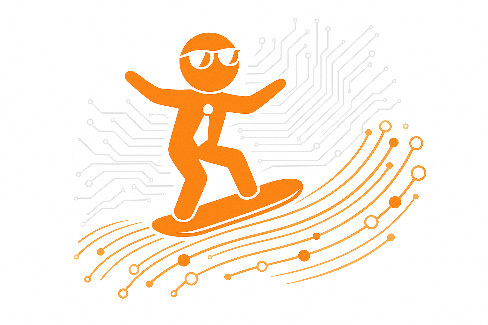

Guinect es un espacio de participación creado para guiar a gobiernos, líderes locales y comunidades a crear e implementar iniciativas y proyectos de impacto económico y social.
Toma el TourConstruimos soluciones y procesos de gobernanza más intuitivos, efectivos, transparentes y receptivos...
donde las decisiones, las políticas públicas, la gestión de las ciudades y las iniciativas sociales se guían por datos ciudadanos inteligentes.



QUÉ acciones tomar, CÓMO y DÓNDE implementarlas, con QUIÉN colaborar, A QUIÉN dirigir los esfuerzos, y CÓMO ejecutarlos.


